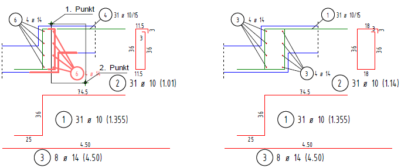

")
Geometrieelemente zusammen mit der Bewehrung dehnen (ausgenommen Kreise) und Bewehrungsformen (Stabstahl) gleichzeitig ändern.
Führen Sie die Aktion in zwei Schritten, jeweils für X- und Y- getrennt durch, wenn nicht nur in eine Richtung gedehnt werden soll.
1.Elemente selektieren
§Ziehen Sie einen Rahmen durch das Anklicken von zwei Punkten um den zu verändernden Bereich und bestätigen Sie die Auswahl mit Rechtsklick. [1. Punkt]; [2. Punkt].
Wenn die Elemente, die Sie markiert haben, nicht mit dem aktuell eingestellten Maßstab (s. untere Menüleiste) übereinstimmen, werden Sie in einer Meldung darauf hingewiesen. Nehmen Sie in diesem Fall eine Maßstabskorrektur vor:
–Maßstabsinformationen zu einzelnen Zeichenelementen erhalten Sie über die Elementabfrage in der unteren Menüleiste.
[Untere Menüleiste | [?]].
–Mit der Funktion Maßstab können Sie den Maßstab eingeben, in dem die Elemente gezeichnet sind.
–Die Maßstäbe einzelner Zeichenelemente können Sie mit der Maßstabskorrektur korrigieren.
2.Referenzpunkte angeben
§Klicken Sie einen Punkt der zu dehnenden Bewehrung als Referenzpunkt an. [Refpu.Obj].
Wenn Sie keinen Punkt anklicken, wird die Lage der Zeichenmarke als Referenzpunkt genommen.
§Führen Sie einen der folgenden Schritte aus:
a)Geben Sie die Verschiebung des Punktes als absoluten Wert ein und bestätigen Sie mit der Eingabetaste. [X-Refpu.Neu]; [Y-Refpu.Neu]. b)Mit Differenzeingabe: Aktivieren Sie Retan und geben Sie das Ziel relativ durch Anklicken einer Bezugslinie und Eingabe der Differenz ein. Bestätigen Sie mit der Eingabetaste. c)Ohne Differenzeingabe: Aktivieren Sie Retaus und klicken Sie den neuen Referenzpunkt an. |
Die Bewehrungsauszüge werden automatisch angepasst. Sind durch die Änderung auch Staffelverlegungen betroffen, werden vier Möglichkeiten geboten, wie die Änderung vorgenommen werden soll. [Enter-Taste = nächstmögliche Verlegung anzeigen; Null = Änderung akzeptieren]
Optionen unter der Abfrage |
Mit den folgenden Optionen (1 bis 4) können Sie die Darstellung der Längenänderung anpassen. [Enter-Taste = nächstmögliche Verlegung anzeigen; Null = Änderung akzeptieren].
Nutzen Sie die rechte Maustaste oder die Eingabetaste, um zwischen den Darstellungsoptionen zu wechseln, und die Vorschau an der Verlegung anzeigen zu lassen. Klicken Sie alternativ eine der Schaltflächen an. Die Verlegung wird auf der Zeichnung mit der Farbe für Markieren hervorgehoben; [Option | SysDat | Farbeinstellungen | Konstruktionsprogramm].
Anmerkung: Bei den Optionen 1 und 2 kann die Verlegung je nach Verlegeparameter jeweils in die eine oder in die andere Richtung verschoben werden. Die Markierungskreuze  an der Verlegung zeigen an, in welche Richtung die Längenänderung vorgenommen wird.
an der Verlegung zeigen an, in welche Richtung die Längenänderung vorgenommen wird.
|
Option 1: Verlegung am Ende dehnen |
|
Option 2: Verlegung am Anfang dehnen |
|
Option 3: Verlegung um die halbe Längenänderung zu beiden Seiten gleich verschieben. |
|
Option 4: Verlegung nicht ändern. Es wird die ursprüngliche Länge gezeichnet. |
|
Bei mehreren Verlegungen, die mit derselben Biegeform verlegt worden sind, wird Ihnen angezeigt, welche Verlegung von wie vielen Verlegungen (z. B. 1 von 2) gerade geändert wird. Die entsprechende Verlegung wird in der Zeichnung markiert. Klicken Sie auf diese Schaltfläche, um die aktuelle Verlegung zu ändern und die nächste anzupassen. Geben Sie alternativ "0" in die Eingabe ein und bestätigen Sie mit der Eingabetaste. Die zuletzt gewählte Darstellungsoption wird für die nächste Verlegung übernommen. |
|
Nach dem Ändern der letzten Verlegung klicken Sie auf diese Schaltfläche, um alle Änderungen zu bestätigen. Geben Sie alternativ "0" in die Eingabe ein und bestätigen Sie mit der Eingabetaste. |
|
Auto-Zoom an: Auto-Zoom aus: |


Falls die Auswahl der Teillänge nicht eindeutig ist
Wenn bei der Auswahl auch auf dem Plan nicht sichtbare Teillängen mit ausgewählt wurden, können Sie entscheiden, welche Teillängen der Biegeform gedehnt werden sollen. ISBCAD zoomt zur Biegeform und markiert nacheinander die entsprechenden Teillängen.
-Wählen Sie die Teillängen der Biegeform, die gedehnt werden sollen. [Soll diese Teillänge gedehnt werden?].
-Geben Sie 0 für Nein (nicht dehnen) oder 1 für Ja (Teillänge dehnen). [0 = Nein; 1 = Ja].
Wenn nötig wird nach der Eingabe die nächste Teillänge abgefragt.
Beispiel:
 |